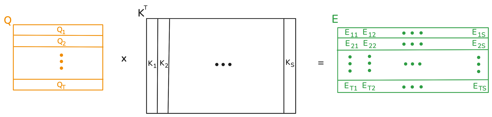

Welcome to part 2 of my transformer tutorial. In this part we will complete the full model implementation by adding the decoder. Then we will process the dataset and get it ready for model training, and finally we'll implement beam search with KV caching for inference.
Revisiting Attention: Cross Attention and Masking
Let's recall single head attention. Raw attention scores are given by the queries and keys through \(Q \times K^T\). The weight matrix is obtained by dividing the raw scores by \(\sqrt{D_k}\) followed by softmax.
The thing is, the keys and values can originate from a different sequence than the one producing the queries. This is the concept known as cross attention. For terminology, we call the sequence producing the queries the "target sequence", and the one producing keys and values the "source sequence". Cross attention allows tokens from the target sequence to be placed in the context of the source sequence. In our case, French tokens in the context of English tokens. Below is a visualization of the raw scores calculation, supposing the target and source sequences are of lengths \(T\) and \(S\), respectively.
The important thing to note is that the source and target sequences don't have to be the same length. The value matrix has \(S\) rows, one per token in the source sequence. As before, each token in the target sequence has a corresponding row in the weight matrix, and its representation becomes a weighted sum of the rows from the value matrix.
The weight matrix can be further customized via a concept known as masking. In essence, if you don't want the \(i\)'th token from the target sequence to attend to the j'th token from the source sequence, then the \(E_{ij}\) entry of the raw weight matrix must be replaced by negative infinity. That way, softmax will replace it with \(0\) when calculating the final weight matrix, and the \(j\)'th value will have no contribution to the representation of token \(i\). There are two main reasons why you'd want to do this. The first is that padding tokens, whether from the source or target sequence, have no meaning, and we don't want their values to be part of the summation. Secondly, in the decoder's self-attention, where the source and target sequences are the same sequence, we will apply a "causal mask". Token \(i\)'s representation will be a sum of only the first \(i\) values. We never want the \(i\)'th French token's representation factoring in future French tokens. The reason for this will become clear in the training section.
You might be wondering why the raw attention scores are calculated first, and only then replaced with negative infinity for masking. It seems like wasted computation, and a mechanism that avoids computing the dot products of masked entries would be more efficient. However, in practice GPUs are so well optimized for matrix multiplication that it's still not worth implementing such a mechanism.
The Decoder and Full Transformer
The decoder is similar to the encoder, with some differences. We saw that the input to the encoder is an English sentence. On the other hand, the input to the decoder is the output of the encoder along with the corresponding French sentence. That is, the decoder receives two sequences as input instead of one. The decoder is a stack of "decoder layers". A decoder layer is similar to an encoder layer, except that it contains three sublayers instead of two. The extra sublayer does cross multihead attention and sits between the self attention and feedforward layers. The target sequence in this cross attention layer is the French sentence, and the source sequence is the output of the encoder.
Like the encoder, the decoder has an embedding layer along with positional encodings. The French sentence is passed through these layers before moving on to the decoder stack.
As discussed, the self attention sublayers of the decoder use the French sentence and causal masking, whereas the self attention sublayers of the encoder use the English sentence and no causal masking.
So without further ado, the decoder:
class DecoderLayer(nn.Module):
def __init__(
self, num_heads, hidden_size, key_size, value_size, feedforward_size, dropout
):
super().__init__()
self.self_multihead_attention_sublayer = AttentionSubLayer(
num_heads, hidden_size, key_size, value_size, dropout
)
self.cross_multihead_attention_sublayer = AttentionSubLayer(
num_heads, hidden_size, key_size, value_size, dropout
)
self.feedforward_sublayer = FeedForwardSubLayer(
hidden_size, feedforward_size, dropout
)
def forward(
self, X_Q, X_KV, causal_mask, tgt_key_padding_mask, src_key_padding_mask
):
X = self.self_multihead_attention_sublayer(
X_Q, X_Q, causal_mask=causal_mask, key_padding_mask=tgt_key_padding_mask
)
X = self.cross_multihead_attention_sublayer(
X, X_KV, key_padding_mask=src_key_padding_mask
)
X = self.feedforward_sublayer(X)
return X
class TransformerDecoder(nn.Module):
def __init__(
self,
vocab_size,
context_size,
stack_size=6,
num_heads=8,
hidden_size=512,
key_size=64,
value_size=64,
feedforward_size=2048,
dropout=0.1,
):
super().__init__()
self.embeddings = nn.Embedding(vocab_size, hidden_size)
self.positional_encodings = nn.Embedding(context_size, hidden_size)
self.decoder_stack = nn.ModuleList(
[
DecoderLayer(
num_heads,
hidden_size,
key_size,
value_size,
feedforward_size,
dropout,
)
for _ in range(stack_size)
]
)
def forward(
self, X_tgt, X_src, tgt_causal_mask, tgt_key_padding_mask, src_key_padding_mask
):
X = self.embeddings(X_tgt) + self.positional_encodings(
torch.arange(X_tgt.shape[1], device=X_tgt.device)
)
for decoder_layer in self.decoder_stack:
X = decoder_layer(
X, X_src, tgt_causal_mask, tgt_key_padding_mask, src_key_padding_mask
)
return X
The full transformer feeds the output of the encoder into the decoder, and contains a projection layer which will be described in the section on model training:
class Transformer(nn.Module):
def __init__(self, encoder_config, decoder_config):
super().__init__()
self.vocab_size = decoder_config["vocab_size"] # Needed for generate.
self.encoder = TransformerEncoder(**encoder_config)
self.decoder = TransformerDecoder(**decoder_config)
self.project = nn.Linear(
decoder_config["hidden_size"], decoder_config["vocab_size"]
)
def forward(
self, X_tgt, X_src, tgt_causal_mask, tgt_key_padding_mask, src_key_padding_mask
):
X_src = self.encoder(X_src, src_key_padding_mask)
X_tgt = self.decoder(
X_tgt, X_src, tgt_causal_mask, tgt_key_padding_mask, src_key_padding_mask
)
return self.project(X_tgt)This concludes the implementation for the model as needed for training. However, this is not yet the complete implementation, as we will also need to implement a function for inference time. We will now proceed to describe our dataset and how to train the model.
Data Processing
The Multi30k dataset contains training, validation, and test splits for several languages. Each file is a newline separated list of sentences for its particular language, and all files follow the same order. The following code downloads 6 files: each split in English and French. Have a look at the files to become familiar with them.
MULTI30_URL = "https://raw.githubusercontent.com/multi30k/dataset/master/data/task1/raw/"
LOCAL_DATA_DIR = "multi30k"
DATA_FILES_CONFIG = {
"train": {"en": "train.en.gz", "fr": "train.fr.gz"},
"val": {"en": "val.en.gz", "fr": "val.fr.gz"},
"test": {"en": "test_2016_flickr.en.gz", "fr": "test_2016_flickr.fr.gz"},
}
DATA_FILES_NAMES = [
filename
for split in DATA_FILES_CONFIG.values()
for filename in split.values()
]
# Download data into a local directory.
os.makedirs(LOCAL_DATA_DIR, exist_ok=True)
for file_name in DATA_FILES_NAMES:
local_path = os.path.join(LOCAL_DATA_DIR, file_name)
decompressed_path = os.path.splitext(local_path)[0]
if not os.path.exists(decompressed_path):
# Download file.
with requests.get(os.path.join(MULTI30_URL, file_name), stream=True) as response:
response.raise_for_status()
with open(local_path, "wb") as f:
for chunk in response.iter_content(chunk_size=8192):
f.write(chunk)
# Decompress file.
with gzip.open(local_path, 'rb') as f_in:
with open(decompressed_path, 'wb') as f_out:
shutil.copyfileobj(f_in, f_out)
# Remove compressed version of file.
os.remove(local_path)This dataset is small enough to be loaded in its entirety from the files into ram, which is what we'll do next. For each split, we read in its English and French files line by line, simultaneously. For our purposes, the spacy models accept each line as input, and produce its corresponding list of tokens. Each split is loaded in as a list of tuples, where each tuple itself contains two lists: the English and French tokens. Furthermore, we'll save the final data structure containing the splits as a binary file that can be loaded in, because spacy tokenization takes a couple of minutes, and we only need to do it once (so next time you run the notebook, the data can be loaded directly from the binary instead of re-parsing the files). The example at the end of the code should make it clear what exactly the "data" object contains.
Finally, you'll notice that all capital letters are removed. If "The" and "the" were different tokens, our vocabulary would be too large.
# To save time, save the data object. That way, spacy only needs tokenize the data once.
if os.path.exists("data_cache.pt"):
data = torch.load("data_cache.pt")
else:
spacy_en = spacy.load("en_core_web_sm", disable=['parser', 'ner'])
spacy_fr = spacy.load("fr_core_news_sm", disable=['parser', 'ner'])
def load_data(eng_file_path, fr_file_path):
pairs = []
with open(eng_file_path, 'r') as f1, open(fr_file_path, 'r') as f2:
for eng_line, fr_line in zip(f1, f2):
eng_tokens = [token.text.lower() for token in spacy_en(eng_line.strip())]
fr_tokens = [token.text.lower() for token in spacy_fr(fr_line.strip())]
pairs.append((eng_tokens, fr_tokens))
return pairs
data = {}
for split, langs in DATA_FILES_CONFIG.items():
eng_file_path = os.path.join(LOCAL_DATA_DIR, os.path.splitext(langs['en'])[0])
fr_file_path = os.path.join(LOCAL_DATA_DIR, os.path.splitext(langs['fr'])[0])
data[split] = load_data(eng_file_path, fr_file_path)
torch.save(data, "data_cache.pt")
data['train'][0] # Example
# Output
(['two', 'young', ',', 'white', 'males', 'are', 'outside', 'near', 'many', 'bushes', '.'],
['deux', 'jeunes', 'hommes', 'blancs', 'sont', 'dehors', 'près', 'de', 'buissons', '.'])Vocabularies
With the data tokenized and loaded into ram, we need to create the vocabulary. As discussed before, we will have both an English and a French vocabulary. These will be instances of a Vocab class, implemented below. A Vocab maintains two dictionaries: one which maps words to integers, and the other which maps integers back to words. Words can be added to the vocabulary by passing in tokenized sentences, and each new word is mapped to the current number of words in the vocabulary. Each vocabulary is constructed by adding in every sentence of its respective language from the training split.
You'll also notice that the vocabulary comes pre-built with four special tokens. All inputs will be prepended with the SOS token, and have the EOS token appended. At inference time, unmapped words will be treated as the UNK token. Finally, the purpose of the PAD token is to extend each sequence in a batch to be the size of the longest sentence in the batch.
PAD_TOKEN, PAD_IDX = "", 0
SOS_TOKEN, SOS_IDX = "", 1
EOS_TOKEN, EOS_IDX = "", 2
UNK_TOKEN, UNK_IDX = "", 3
class Vocab:
def __init__(self):
self.word_to_ordinal = {PAD_TOKEN: PAD_IDX, SOS_TOKEN: SOS_IDX, EOS_TOKEN: EOS_IDX, UNK_TOKEN: UNK_IDX}
self.ordinal_to_word = {PAD_IDX: PAD_TOKEN, SOS_IDX: SOS_TOKEN, EOS_IDX: EOS_TOKEN, UNK_IDX: UNK_TOKEN}
self.count = 4
# This method builds the vocabulary, for each sentence passed in.
def add_sentence(self, sentence):
for word in sentence:
if word not in self.word_to_ordinal:
self.word_to_ordinal[word] = self.count
self.ordinal_to_word[self.count] = word
self.count += 1
# This method is for creating model inputs.
def to_ordinals(self, sentence):
ordinal_sentence = [SOS_IDX]
for word in sentence:
ordinal_sentence.append(self.word_to_ordinal.get(word, UNK_IDX))
ordinal_sentence.append(EOS_IDX)
return torch.tensor(ordinal_sentence, dtype=torch.int64)
# This method is for viewing model outputs.
def to_words(self, ordinal_sentence):
tokens = []
for ordinal in ordinal_sentence:
ordinal = ordinal.item()
if ordinal == EOS_IDX:
break
if ordinal != SOS_IDX and ordinal != PAD_IDX:
tokens.append(self.ordinal_to_word.get(ordinal, UNK_TOKEN))
return ' '.join(tokens)
# Build the vocabularies from training data.
en_vocab = Vocab()
fr_vocab = Vocab()
for en_fr_pair in data['train']:
en_vocab.add_sentence(en_fr_pair[0])
fr_vocab.add_sentence(en_fr_pair[1]) Datasets and Dataloaders
With the data in ram, and the Vocab class implemented, we're ready to create the PyTorch Dataset and Dataloader objects used for model training. The constructor of the dataset will accepts a list of pairs of sentences, which are lists of tokens. The lists in data['train'], data['val'], and data['test'] are compatible. The constructor transforms each sentence to the ordinal encoding provided by the vocab.
class Multi30k(Dataset):
def __init__(self, pairs, en_vocab, fr_vocab):
super().__init__()
self.ordinal_pairs = []
for pair in pairs:
ordinal_pair = (en_vocab.to_ordinals(pair[0]), fr_vocab.to_ordinals(pair[1]))
self.ordinal_pairs.append(ordinal_pair)
def __len__(self):
return len(self.ordinal_pairs)
def __getitem__(self, index):
return self.ordinal_pairs[index]Finally, we create three dataloaders, one for each split. These dataloaders use a custom collate function, because sentences are of varying length. The collate function pads sentences up to the longest sentence in the batch (for their respective language).
BATCH_SIZE = 16
def collate_fn(batch):
X_src = pad_sequence([batch[i][0] for i in range(len(batch))], batch_first=True, padding_value=PAD_IDX)
X_tgt = pad_sequence([batch[i][1] for i in range(len(batch))], batch_first=True, padding_value=PAD_IDX)
return (X_src, X_tgt)
dataloaders = {}
for split, pairs in data.items():
dataset = Multi30k(pairs, en_vocab, fr_vocab)
dataloaders[split] = DataLoader(
dataset,
batch_size=BATCH_SIZE,
shuffle=(split == "train"), # Shuffle only True for training data
collate_fn=collate_fn,
)With the dataloaders implemented, we're ready to train the model.
Training
The model accepts as input a pair of English and French token sequences, and ultimately produces a representation for each French token. Each token's representation is a function of the model weights, the entire English sentence, as well as the portion of the French sentence up to and including that token. Each token is then finally passed through a linear projection, from the model's hidden size to the French vocabulary size.
In order to train the model, the strategy is to interpret the final output at each position as the probability distribution of the next token given all English tokens and only the French tokens up to that position. Under this assumption, the probability of the French sentence (conditioned on its English sentence) is calculated by invoking the chain rule of probabilities. So, find the probability of the next token according to the distribution at each position (up to and excluding the position of the EOS token), and multiply all those probabilities.
To train the model, we attempt to find the weights that maximize the probability of the training dataset. The instances of the dataset are assumed to be independent, so the probability of the training set is a product of the probabilities of the individual instances. It so happens that the maximum likelihood estimate is exactly the model that minimizes the cross entropy loss, where the ground truth for each token is the one hot encoding of the next token. The model is thus trained via gradient descent on the cross entropy loss. At each position the model predicts what the next token must be, and is punished for giving a low probability for the correct token. This is an idea known as teacher forcing.
Below is an example training loop. Pay close attention to what is passed into the forward method of the model. The input to the encoder is the batch of English sentences, whereas the French sentences passed into the decoder have their last token cut off. That's because the last token is either an EOS or PAD token, and there is no "next" token to use as the ground truth. On the other hand, the ground truths are the French batch shifted by cutting off the SOS token. Finally, look at the form of the attention masks.
CONTEXT_SIZE = 60 # The number of positional encodings to learn.
encoder_config = {
"vocab_size": en_vocab.count,
"context_size": 60,
"stack_size": 6,
"num_heads": 8,
"hidden_size": 512,
"key_size": 64,
"value_size": 64,
"feedforward_size": 2048,
"dropout": 0.1,
}
decoder_config = {
"vocab_size": fr_vocab.count,
"context_size": 60,
"stack_size": 6,
"num_heads": 8,
"hidden_size": 512,
"key_size": 64,
"value_size": 64,
"feedforward_size": 2048,
"dropout": 0.1,
}
model = Transformer(encoder_config, decoder_config).to(device)
criterion = torch.nn.CrossEntropyLoss(ignore_index=PAD_IDX)
optimizer = Adam(model.parameters(), lr=0.0001)
epochs_completed = 0
# If you already ran this notebook, load the model that has been trained so far.
if os.path.exists("checkpoint.pt"):
checkpoint = torch.load("checkpoint.pt")
model.load_state_dict(checkpoint["model_state_dict"])
optimizer.load_state_dict(checkpoint["optimizer_state_dict"])
epochs_completed = checkpoint["epochs_completed"]
model.train()
epochs = 5 # Number of epochs to train for.
for _ in range(epochs):
for batch_src, batch_tgt in dataloaders["train"]:
# Move batch to gpu, prepare model inputs.
encoder_in = batch_src.to(device)
decoder_in = batch_tgt[:, :-1].to(device) # Do not include the last token.
ground_truth = batch_tgt[:, 1:].to(
device
) # Do not include the first token. The ground truth for the SOS token is thus the first word of the French sentence.
# Create masks.
tgt_len = decoder_in.shape[1]
tgt_causal_mask = get_causal_mask(tgt_len, device)
tgt_key_padding_mask = decoder_in == PAD_IDX
src_key_padding_mask = encoder_in == PAD_IDX
# Update weights
optimizer.zero_grad()
features = model(
decoder_in,
encoder_in,
tgt_causal_mask,
tgt_key_padding_mask,
src_key_padding_mask,
)
loss = criterion(features.view(-1, features.shape[-1]), ground_truth.view(-1))
loss.backward()
optimizer.step()
epochs_completed += 1
torch.save(
{
"model_state_dict": model.state_dict(),
"optimizer_state_dict": optimizer.state_dict(),
"epochs_completed": epochs_completed,
},
"checkpoint.pt",
)Inference
With the model trained, how do we actually perform inference? During training, French sentences were passed into the model, in order to show the model what "correct" translations look like. During inference, we do not have access to French sentences, but only English ones.
The naive option is to pass in the English sentence, and instantiate the French sentence as a single SOS token. Next, collect the most likely prediction for the next token, append it to the French sentence, and repeat, until an EOS token is predicted. This is greedy autoregressive decoding, and while simple, does not work well in practice. The reason for this is that greedily selecting tokens with the highest probabilities one after another does not actually yield the highest probability sentence. This algorithm may, for example, select a high probability token, followed by several very low probability tokens, instead of a slightly less high probability token followed by higher probability tokens.
In comes K-beam search, which works as follows. It first samples K tokens without replacement from the SOS token's distribution. These will be the beginnings of K French sentences (beams). From here, beam search enters a loop. For each iteration, it looks at each possible continuation of each beam, which is a pool of \(K \times \text{vocab_size}\) possibilities. From those, it selects the top K most likely ones, and repeats. It's possible that not every beam survives this step, because one beam could have two continuations in the top \(K\), thus pushing some other less likely beam out. This is still a greedy algorithm, but it considers more possibilities than the first option discussed.
We'll keep a rolling probability for each beam in a tensor of size \(K\) named "scores". The probability score of each beam will be the sum of the log probabilities of each token in the beam, as this it more numerically stable than the product of the probabilities of each token, and produces the same solution.
In terms of implementation, these K French sentences are instantiated in a pre-filled \(K \times \text{max_size}\) tensor, with the SOS token followed by PAD. This tensor is the beams tensor. The first step passes a single SOS token through the decoder, and \(K\) tokens are sampled from the distribution of the SOS token. These tokens are added to the start of the beams in-place, in the second position of the sequence dimension, following the SOS token.
From here, beam search is deterministic. The beams are again passed through the decoder, and then each beam has vocab_size possible continuations according to the distributions of the last token generated in that beam. The log probability of every possible continuation is calculated and these log probabilities are all stored in a \(K \times \text{vocab_size}\) tensor. This tensor is then broadcasted with the scores tensor, yielding a \(K \times \text{vocab_size}\) tensor that has the sum-of-logs probability of each candidate sentence. The top \(K\) of those are chosen, the beams are re-selected and the \(K\) new tokens are added in place for the selected beams. This iterative process repeats until the beams tensor is filled, and the most likely beam is returned. Have a look at the code for beam search, which is a method added to the class of the full transformer:
def generate(
self, X_src, src_key_padding_mask, beam_K, beam_max_len, SOS_IDX, PAD_IDX
):
device = X_src.device
# Get source features (encoder output). Only need to do this once.
src_features = self.encoder(X_src, src_key_padding_mask)
# Initialize empty beams with SOS + PAD
beams = torch.full(
(beam_K, beam_max_len), PAD_IDX, dtype=torch.int, device=device
)
beams[:, 0] = SOS_IDX
total_causal_mask = get_causal_mask(beam_max_len, device=device)
# Obtain logits for a single SOS token, which will attend to the source sentence.
decoder_in = beams[:1, :1]
causal_mask = total_causal_mask[:1, :1]
tgt_key_padding_mask = decoder_in == PAD_IDX
features = self.decoder(
decoder_in,
src_features,
causal_mask,
tgt_key_padding_mask,
src_key_padding_mask,
)
logits = self.project(features)
# Obtain the score for each token. Also obtain a probability distribution over all tokens.
first_token_probs = torch.softmax(logits, dim=-1).view(-1)
first_token_scores = torch.log_softmax(logits, dim=-1).view(
-1
) # Despite already having softmax, log_softmax is more numerically stable, and thus preferred.
# Sample K tokens, and place them in the beams. Initialize scores for each beam.
tokens = torch.multinomial(first_token_probs, beam_K)
beams[:, 1] = tokens
beam_scores = first_token_scores[tokens].view(beam_K, 1)
# Deterministic beam search for remaining tokens.
for beam_cur_len in range(2, beam_max_len):
# Get logits for the next token (across all beams).
decoder_in = beams[:, :beam_cur_len]
causal_mask = total_causal_mask[:beam_cur_len, :beam_cur_len]
tgt_key_padding_mask = decoder_in == PAD_IDX
features = self.decoder(
decoder_in,
src_features,
causal_mask,
tgt_key_padding_mask,
src_key_padding_mask,
)
logits = self.project(features)
next_token_logits = logits[:, beam_cur_len - 1, :]
# Select the top K beams from the pool of candidates, update scores.
candidates = beam_scores + next_token_logits
scores, indices = torch.topk(candidates.view(-1), beam_K)
beam_indices = indices // self.vocab_size
tokens = indices % self.vocab_size
beams = beams[
beam_indices
] # Re-arrange the beams in terms of score. Some beams are eliminated, while some are duplicated one or more times.
beams[:, beam_cur_len] = tokens
beam_scores = beam_scores[beam_indices] + scores.view(beam_K, 1)
return beams[0]
With the model trained and beam search completed, let's see the results after 15 epochs of training (I recommend looking at the source code and running the notebook demo.ipynb!). Here we'll just select one sentence from the training set, print its English and French versions, and print the model's prediction.
# Code
batches = iter(dataloaders['train'])
X_src, X_tgt = next(batches)
X_src = X_src.to(device)
X_tgt = X_tgt.to(device)
X_src = X_src[:1,:]
src_key_padding_mask = (X_src == PAD_IDX)
model.eval()
with torch.no_grad():
sentence = model.generate(X_src, src_key_padding_mask, 7, 60, SOS_IDX, PAD_IDX)
print("English sentence:", en_vocab.to_words(X_src[0]))
print("French sentence ground truth:", fr_vocab.to_words(X_tgt[0]))
print("Model output:", fr_vocab.to_words(sentence))# Output
English sentence: a man is preparing food on a grill outside a home .
French sentence ground truth: un homme prépare de la nourriture sur un barbecue devant une maison .
Model output: un homme prépare de la nourriture sur un barbecue dehors .You may have noticed something is inefficient about this beam search implementation as described so far. In each iteration, the beams tensor is passed in, and only the distribution of the last token is used in order to select the next beams/tokens. In fact, the output at each position before the "front" token of the beams never changes between iterations. That makes sense because appending tokens does not affect the represetation of past tokens, as each token only attends to past tokens due to the causal mask. This is a problem addressed by a concept known as KV caching, described next.
As a side note, you'll notice that the beams tensor looks like a batch \(K\) of sequences, and yet only one sequence (the source sequence) is passed into the encoder. That is fine, as the output of the encoder will be broadcasted inside the decoder's forward method, in particular in the first sublayer.
KV Caching
Currently being developed!